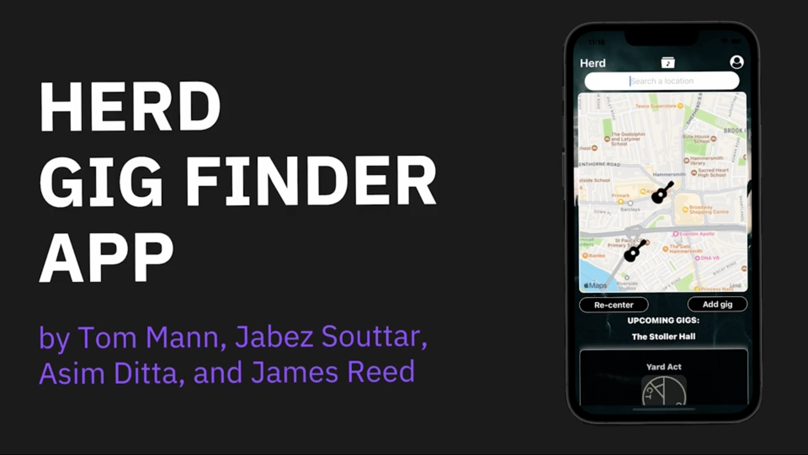
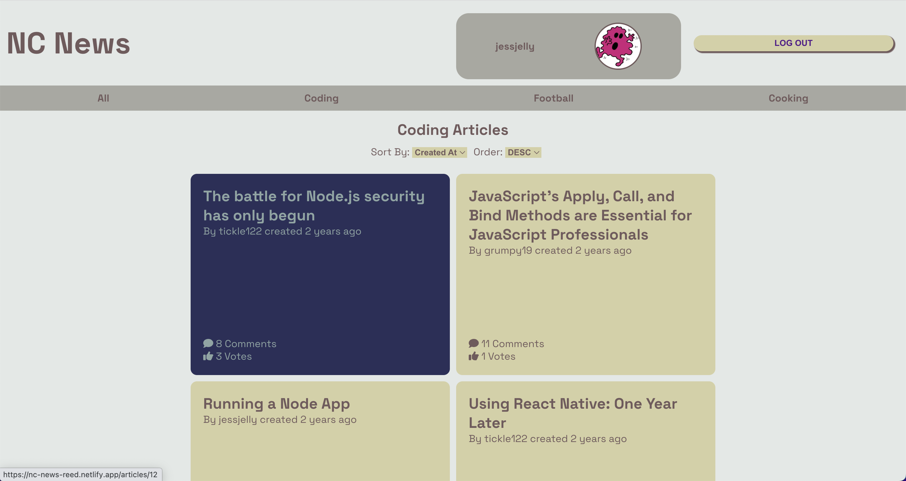
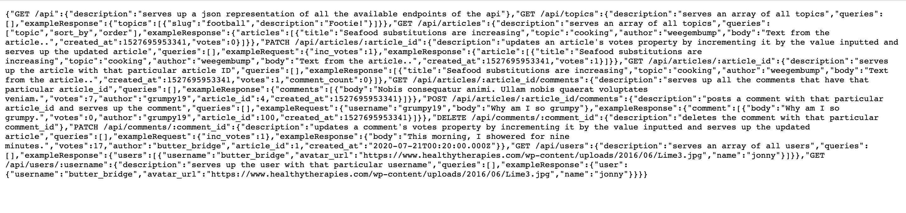

Projects
Projects

Herd
Node.js, DynamoDB, AWS, Lambda, SES, Amplify, Cognito, Cloudformation, React Native,
TypeScript, Serverless Framework
A gig finding app that lets fans and artists discover new music, find local gigs, find gig buddies in
message boards, and post their own gigs to attract fans. Users can set email reminders to remind them of
upcoming gigs they’re interested in, talk on individual gig message boards, as well as follow links to
listen to artists on Spotify.
View Project

News App User Interface
JavaScript, React, Netlify
A front end user interface built using React and hosted on
Netlify. This is intended to mimic the frontend of a real
world news website (such as reddit).
View Project

News App API
PostgreSQL, express.js, Node.js, Heroku
An API that has been built for the purpose of accessing
application data programmatically. This is intended to mimic
a real world backend service (such as reddit).
View Project